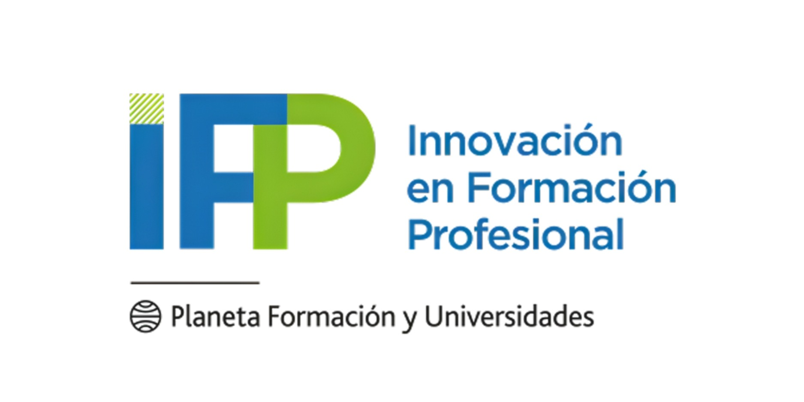
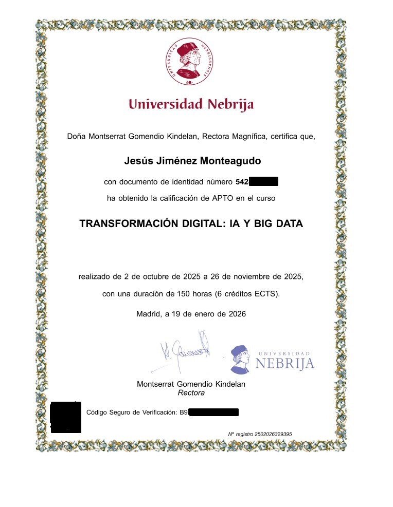
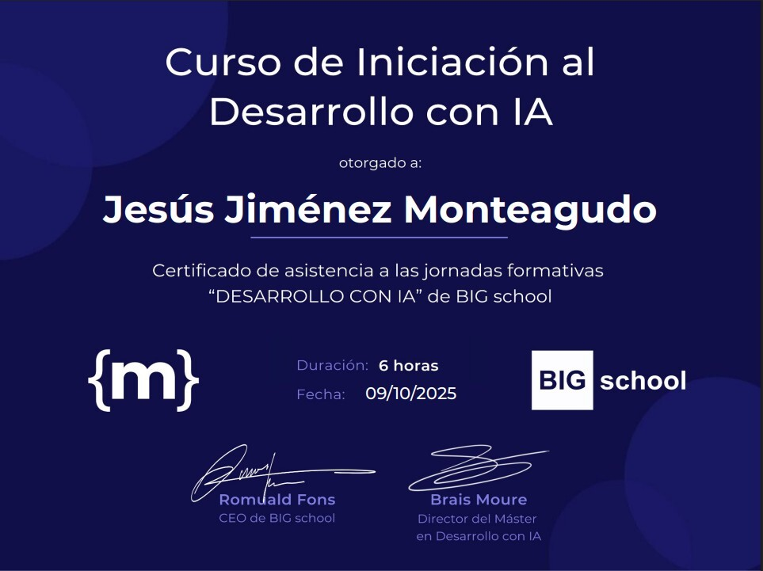

Entusiasta de la informática con una sólida base en sistemas y hardware, evolucionando actualmente hacia la Ciberseguridad. Tras años de experiencia en el diagnóstico y mantenimiento de equipos, estoy trasladando esa capacidad de resolución de problemas al análisis de vulnerabilidades. Formándome activamente en el ecosistema Kali Linux y el uso de herramientas como Nmap, Metasploit y Nessus, combino el rigor técnico con fundamentos en Inteligencia Artificial y un enfoque analítico para identificar vectores de ataque en infraestructuras digitales.
Análisis de Vulnerabilidades
Respuesta ante Incidentes
Fundamentos de IA
Administración Windows/Linux
Seguridad en Redes
Análisis de Resultados
iFP
Formación técnica en administración de sistemas Windows y Linux, redes, virtualización y seguridad informática. Desarrollo de competencias en protección de infraestructuras, configuración segura de servicios, análisis de vulnerabilidades y aplicación de buenas prácticas de ciberseguridad en entornos empresariales.

Universidad Jaume I
Grado en Ingeniería Informática cursado hasta segundo año, con enfoque en programación, a lgoritmos, bases de datos y arquitectura de sistemas. Formación que consolidó una base técnica sólida y pensamiento estructurado aplicado al ámbito tecnológico.
Universidad Nebrija
Verificación bajo solicitud
Curso orientado a los fundamentos de la inteligencia artificial y el análisis de datos, abordando conceptos de machine learning, procesamiento de información y aplicación de modelos predictivos en distintos ámbitos tecnológicos.

BIG School & MoureDev
Curso de iniciación al desarrollo con IA enfocado en fundamentos, uso de herramientas actuales y aplicación práctica en entornos tecnológicos.

Abierto a oportunidades como analista SOC junior, prácticas en ciberseguridad o proyectos donde la IA y la seguridad digital converjan. Si buscas un perfil técnico con mentalidad analítica y enfoque en aprendizaje continuo, estaré encantado de hablar contigo.
Correo electrónico
jesusjimm003@gmail.com
Teléfono
+34 685 60 10 32
https://linkedin.com/in/jesusjimm